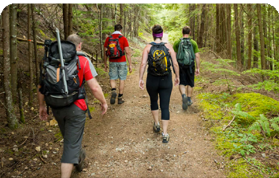
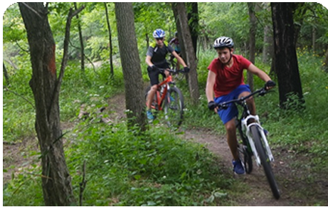
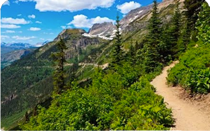

We envision a world where everyone has permanent access to a hiking trail
-
Advocate
We work with Congress, Federal agencies, and partners on policy issues and legislation to ensure funding for trails, preservation of natural areas, and protection of the hiking experience.
-
Volunteer
Trails don't maintain themselves. Individuals of any age and experience level can become trail stewards. Give back to the trails you love, meet new people, and enjoy the experience!
-
Explore
Feel confident when you set out on your next trail adventure. Check out our free hiking resources like tips for hiking with families, gear checklists, finding the best trail for you.
With the support of our members, and partners, we've improved trail access for millions of people
-
We've Mobilized
558,768
Trail Volunteers
-
We’ve Facilitated
41,146
Miles of Trail Maintenance & Construction
-
Volunteers Have Contributed
$108 Million
in Volunteer Labor
Protecting Trails: Current News and Issues
-

2,802 Miles of Trail to be Improved on International Trails Day
On June 2, 2018, people across the worldwill come together to collectively improve 2,802 miles of trail—the distance across the world—during International Trails Day. Muncak invites hikers, cyclists,…
Read More -

Four Ways to Celebrate International Trails Day on a Bicycle
There are many ways to celebrate the International Trails Day on June 2. It’s even possible to participate on a bicycle. And if you go on a bike overnight trip during International Trails Dayyou will simultaneously…
Read More -

Millennials are the Future of our Trails
The smell of fresh dew is a welcome scent, as the crunch of my boots melds with the sound of the birds singing their morning song. It’s early and I am wearing layers, but it won’t be long until they are peeled away to adapt to the summer…
Read More